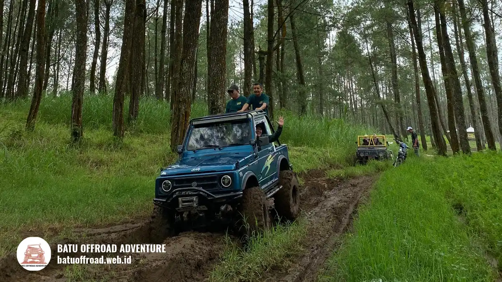

Sensasi Berkendara Offroad di Antara Pohon Pinus
Sensasi berkendara offroad di antara pohon pinus terasa dari aroma segar, cahaya yang menembus dedaunan, dan tekstur jalur yang berubah-ubah. Pengalaman ini memadukan ketegangan kecil dengan ketenangan alam, sehingga perjalanan terasa berkesan bagi pemula maupun peserta yang sudah berpengalaman.
- Sensasi offroad di hutan pinus dipengaruhi oleh aroma, cahaya, dan suasana sejuk.
- Tekstur jalur yang bervariasi membuat setiap tanjakan dan turunan terasa berbeda.
- Kecepatan yang terkendali membantu peserta lebih menikmati pemandangan.
- Kawasan Coban Talun di Kota Batu sering disebut sebagai lokasi wisata alam dengan lanskap pinus.
- Panduan dari pemandu lokal membantu pengalaman tetap aman dan nyaman.
Seperti Apa Suasana dan Aroma di Jalur Pinus?
Suasana di jalur pinus terasa tenang, teduh, dan sejuk, dengan aroma khas daun dan tanah basah. Aroma ini sering menjadi bagian yang paling diingat pengunjung setelah perjalanan selesai.
Ketika kendaraan melambat, aroma pinus terasa lebih kuat. Pengalaman ini berbeda dengan suasana kota yang biasanya dipenuhi suara kendaraan dan polusi udara.
Bagi peserta yang sensitif terhadap debu, sebaiknya membawa masker atau penutup hidung saat jalur sedang kering.
Bagaimana Cahaya Memengaruhi Pengalaman Berkendara?
Cahaya di hutan pinus berubah sepanjang hari, menciptakan bayangan dan kilau yang berbeda di sela pepohonan. Pagi dan sore biasanya memberi pencahayaan yang lebih lembut dibanding siang yang terik.
Perubahan cahaya ini juga membantu pengendara menyesuaikan pandangan. Saat melintasi area yang lebih teduh, mata perlu beradaptasi agar tetap waspada terhadap permukaan jalur.
Cahaya yang indah juga menjadi alasan banyak peserta berhenti sejenak untuk mengambil foto di titik aman.

Jeep offroad biru melintasi jalur lumpur hutan pinus
Apa yang Membuat Tekstur Jalur Pinus Terasa Berbeda?
Tekstur jalur pinus terdiri dari tanah padat, kerikil, dan bebatuan yang tersebar di beberapa bagian. Variasi ini memberi sensasi berkendara yang lebih dinamis dibanding jalan datar.
Setiap bagian jalur dapat menuntut respons yang berbeda dari kendaraan. Pengendara perlu membaca permukaan tanah dan menyesuaikan kecepatan serta cengkeraman roda.
Tekstur juga dapat berubah tergantung cuaca. Jalur yang basah cenderung lebih licin, sehingga kehati-hatian menjadi lebih penting.
Bagaimana Cara Menikmati Sensasi Offroad dengan Lebih Nyaman?
Cara menikmati sensasi offroad dengan nyaman adalah berkendara dengan ritme yang stabil, memilih waktu yang sejuk, dan memberi jeda untuk menikmati lanskap. Peserta yang rileks biasanya lebih mudah mengontrol kendaraan.
Beberapa kebiasaan yang dapat membantu:
- Jaga kecepatan rendah pada tanjakan dan turunan berbatu.
- Pegang kemudi dengan kedua tangan dan tetap fokus pada jalur.
- Ikuti arahan pemandu dan jangan memisahkan diri dari rombongan.
- Gunakan waktu jeda untuk menikmati aroma dan suasana hutan.
Kenyamanan juga dipengaruhi oleh kondisi fisik. Peserta sebaiknya beristirahat cukup sebelum berangkat.
Kesimpulan
Sensasi offroad di antara pohon pinus menggabungkan aroma, cahaya, dan tekstur jalur yang membuat perjalanan terasa istimewa. Dengan persiapan yang tepat, pengalaman ini dapat dinikmati dengan aman dan nyaman.
Ingin merasakan serunya langsung? Hubungi Batu Offroad Adventure di 0812-3398-9707 untuk info paket dan booking.
FAQ
- Apa yang paling terasa saat offroad di hutan pinus?
Yang paling terasa adalah suasana sejuk, aroma pinus, dan getaran kendaraan saat melintasi jalur tanah dan batu. Pengalaman ini berbeda untuk setiap peserta. - Apakah sensasi offroad di hutan pinus selalu sama?
Tidak selalu. Kondisi cuaca, waktu kunjungan, dan kondisi jalur dapat membuat sensasinya berbeda. - Bagaimana cara memastikan perjalanan tetap aman?
Ikuti instruksi pemandu, jaga kecepatan, gunakan perlengkapan keselamatan, dan hindari berkendara sembarangan di luar jalur yang ditentukan.
Artikel Terkait